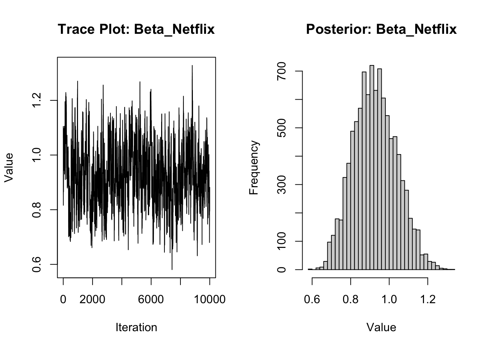

library(dplyr)
library(tidyr)
library(ggplot2)Multinomial Logit Model
This assignment expores two methods for estimating the MNL model: (1) via Maximum Likelihood, and (2) via a Bayesian approach using a Metropolis-Hastings MCMC algorithm.
1. Likelihood for the Multi-nomial Logit (MNL) Model
Suppose we have \(i=1,\ldots,n\) consumers who each select exactly one product \(j\) from a set of \(J\) products. The outcome variable is the identity of the product chosen \(y_i \in \{1, \ldots, J\}\) or equivalently a vector of \(J-1\) zeros and \(1\) one, where the \(1\) indicates the selected product. For example, if the third product was chosen out of 3 products, then either \(y=3\) or \(y=(0,0,1)\) depending on how we want to represent it. Suppose also that we have a vector of data on each product \(x_j\) (eg, brand, price, etc.).
We model the consumer’s decision as the selection of the product that provides the most utility, and we’ll specify the utility function as a linear function of the product characteristics:
\[ U_{ij} = x_j'\beta + \epsilon_{ij} \]
where \(\epsilon_{ij}\) is an i.i.d. extreme value error term.
The choice of the i.i.d. extreme value error term leads to a closed-form expression for the probability that consumer \(i\) chooses product \(j\):
\[ \mathbb{P}_i(j) = \frac{e^{x_j'\beta}}{\sum_{k=1}^Je^{x_k'\beta}} \]
For example, if there are 3 products, the probability that consumer \(i\) chooses product 3 is:
\[ \mathbb{P}_i(3) = \frac{e^{x_3'\beta}}{e^{x_1'\beta} + e^{x_2'\beta} + e^{x_3'\beta}} \]
A clever way to write the individual likelihood function for consumer \(i\) is the product of the \(J\) probabilities, each raised to the power of an indicator variable (\(\delta_{ij}\)) that indicates the chosen product:
\[ L_i(\beta) = \prod_{j=1}^J \mathbb{P}_i(j)^{\delta_{ij}} = \mathbb{P}_i(1)^{\delta_{i1}} \times \ldots \times \mathbb{P}_i(J)^{\delta_{iJ}}\]
Notice that if the consumer selected product \(j=3\), then \(\delta_{i3}=1\) while \(\delta_{i1}=\delta_{i2}=0\) and the likelihood is:
\[ L_i(\beta) = \mathbb{P}_i(1)^0 \times \mathbb{P}_i(2)^0 \times \mathbb{P}_i(3)^1 = \mathbb{P}_i(3) = \frac{e^{x_3'\beta}}{\sum_{k=1}^3e^{x_k'\beta}} \]
The joint likelihood (across all consumers) is the product of the \(n\) individual likelihoods:
\[ L_n(\beta) = \prod_{i=1}^n L_i(\beta) = \prod_{i=1}^n \prod_{j=1}^J \mathbb{P}_i(j)^{\delta_{ij}} \]
And the joint log-likelihood function is:
\[ \ell_n(\beta) = \sum_{i=1}^n \sum_{j=1}^J \delta_{ij} \log(\mathbb{P}_i(j)) \]
2. Simulate Conjoint Data
We will simulate data from a conjoint experiment about video content streaming services. We elect to simulate 100 respondents, each completing 10 choice tasks, where they choose from three alternatives per task. For simplicity, there is not a “no choice” option; each simulated respondent must select one of the 3 alternatives.
Each alternative is a hypothetical streaming offer consistent of three attributes: (1) brand is either Netflix, Amazon Prime, or Hulu; (2) ads can either be part of the experience, or it can be ad-free, and (3) price per month ranges from $4 to $32 in increments of $4.
The part-worths (ie, preference weights or beta parameters) for the attribute levels will be 1.0 for Netflix, 0.5 for Amazon Prime (with 0 for Hulu as the reference brand); -0.8 for included adverstisements (0 for ad-free); and -0.1*price so that utility to consumer \(i\) for hypothethical streaming service \(j\) is
\[ u_{ij} = (1 \times Netflix_j) + (0.5 \times Prime_j) + (-0.8*Ads_j) - 0.1\times Price_j + \varepsilon_{ij} \]
where the variables are binary indicators and \(\varepsilon\) is Type 1 Extreme Value (ie, Gumble) distributed.
The following code provides the simulation of the conjoint data.
Note
# set seed for reproducibility
set.seed(123)
# define attributes
brand <- c("N", "P", "H") # Netflix, Prime, Hulu
ad <- c("Yes", "No")
price <- seq(8, 32, by=4)
# generate all possible profiles
profiles <- expand.grid(
brand = brand,
ad = ad,
price = price
)
m <- nrow(profiles)
# assign part-worth utilities (true parameters)
b_util <- c(N = 1.0, P = 0.5, H = 0)
a_util <- c(Yes = -0.8, No = 0.0)
p_util <- function(p) -0.1 * p
# number of respondents, choice tasks, and alternatives per task
n_peeps <- 100
n_tasks <- 10
n_alts <- 3
# function to simulate one respondent’s data
sim_one <- function(id) {
datlist <- list()
# loop over choice tasks
for (t in 1:n_tasks) {
# randomly sample 3 alts (better practice would be to use a design)
dat <- cbind(resp=id, task=t, profiles[sample(m, size=n_alts), ])
# compute deterministic portion of utility
dat$v <- b_util[dat$brand] + a_util[dat$ad] + p_util(dat$price) |> round(10)
# add Gumbel noise (Type I extreme value)
dat$e <- -log(-log(runif(n_alts)))
dat$u <- dat$v + dat$e
# identify chosen alternative
dat$choice <- as.integer(dat$u == max(dat$u))
# store task
datlist[[t]] <- dat
}
# combine all tasks for one respondent
do.call(rbind, datlist)
}
# simulate data for all respondents
conjoint_data <- do.call(rbind, lapply(1:n_peeps, sim_one))
# remove values unobservable to the researcher
conjoint_data <- conjoint_data[ , c("resp", "task", "brand", "ad", "price", "choice")]
# clean up
rm(list=setdiff(ls(), "conjoint_data"))3. Preparing the Data for Estimation
The “hard part” of the MNL likelihood function is organizing the data, as we need to keep track of 3 dimensions (consumer \(i\), covariate \(k\), and product \(j\)) instead of the typical 2 dimensions for cross-sectional regression models (consumer \(i\) and covariate \(k\)). The fact that each task for each respondent has the same number of alternatives (3) helps. In addition, we need to convert the categorical variables for brand and ads into binary variables.
data_prep <- conjoint_data %>%
mutate(
brand_N = ifelse(brand == "N", 1, 0),
brand_P = ifelse(brand == "P", 1, 0),
ad_Y = ifelse(ad == "Yes", 1, 0)
) %>%
select(resp, task, brand_N, brand_P, ad_Y, price, choice)We begin by preparing the data for estimation. Since Multinomial Logit models require numeric inputs, we convert categorical variables into binary (dummy) variables.In particular, we create indicators for whether the brand is Netflix or Prime (with Hulu as the reference group), and whether ads are included. This allows the model to estimate utility effects associated with each brand and advertising status.
4. Estimation via Maximum Likelihood
We now estimate the model parameters using Maximum Likelihood Estimation. The log-likelihood function is based on the probability that a respondent chooses a particular alternative, given its attributes. We use the optim() function in R to find the parameter estimates that maximize this likelihood. We also compute standard errors and 95% confidence intervals using the inverse of the Hessian matrix.
log_likelihood <- function(beta, data) {
xb <- with(data, beta[1]*brand_N + beta[2]*brand_P + beta[3]*ad_Y + beta[4]*price)
exp_xb <- exp(xb)
data$exp_utility <- exp_xb
probs <- data %>%
group_by(resp, task) %>%
mutate(prob = exp_utility / sum(exp_utility)) %>%
ungroup()
-sum(log(probs$prob[probs$choice == 1]))
}
# Initial values
init_beta <- c(0, 0, 0, 0)
# Estimate using optim
mle_result <- optim(par = init_beta,
fn = log_likelihood,
data = data_prep,
hessian = TRUE,
method = "BFGS")
# Extract estimates and standard errors
mle_estimates <- mle_result$par
vcov_matrix <- solve(mle_result$hessian)
se <- sqrt(diag(vcov_matrix))
# Confidence intervals
z <- qnorm(0.975)
conf_int <- cbind(
Estimate = mle_estimates,
`Std. Error` = se,
`Lower 95%` = mle_estimates - z * se,
`Upper 95%` = mle_estimates + z * se
)
rownames(conf_int) <- c("Beta_Netflix", "Beta_Prime", "Beta_Ads", "Beta_Price")
print(round(conf_int, 3)) Estimate Std. Error Lower 95% Upper 95%
Beta_Netflix 0.941 0.111 0.724 1.159
Beta_Prime 0.502 0.111 0.284 0.719
Beta_Ads -0.732 0.088 -0.904 -0.560
Beta_Price -0.099 0.006 -0.112 -0.087The table above reports the MLE estimates and 95% confidence intervals for each parameter:
Beta_Netflix = 0.941: On average, holding other features constant, a Netflix-branded alternative increases the utility by 0.94 relative to Hulu (the reference group). The 95% CI [0.724, 1.159] does not include 0, suggesting statistical significance.
Beta_Prime = 0.502: Amazon Prime is also preferred over Hulu, but less strongly than Netflix. The 95% CI [0.284, 0.719] is also significant.
Beta_Ads = -0.732: The presence of ads reduces utility by approximately 0.73 units. This effect is both negative and statistically significant (CI does not include 0).
Beta_Price = -0.099: As expected, price negatively impacts choice likelihood. The small standard error (0.006) and narrow confidence interval indicate high precision.
Overall, the signs and magnitudes of the coefficients are consistent with consumer expectations: users prefer Netflix, dislike ads, and are sensitive to price increases.
5. Estimation via Bayesian Methods
To complement the MLE results, we estimate the same model using a Bayesian approach with a Metropolis-Hastings sampler.
We specify Normal(0, 5) priors for the three binary variables (brand and ad) and a Normal(0, 1) prior for price.
We run the algorithm for 11,000 iterations and discard the first 1,000 as burn-in.
The posterior samples are then used to calculate the mean, standard deviation, and 95% credible intervals for each parameter.
We also plot the trace and histogram for one of the coefficients as a diagnostic check.
set.seed(123)
# Log-likelihood (same as MLE)
log_lik <- function(beta, data) {
xb <- with(data, beta[1]*brand_N + beta[2]*brand_P + beta[3]*ad_Y + beta[4]*price)
exp_xb <- exp(xb)
data$exp_utility <- exp_xb
probs <- data %>%
group_by(resp, task) %>%
mutate(prob = exp_utility / sum(exp_utility)) %>%
ungroup()
sum(log(probs$prob[probs$choice == 1]))
}
# Log-prior
log_prior <- function(beta) {
dnorm(beta[1], 0, 5, log=TRUE) +
dnorm(beta[2], 0, 5, log=TRUE) +
dnorm(beta[3], 0, 5, log=TRUE) +
dnorm(beta[4], 0, 1, log=TRUE)
}
# Log posterior
log_posterior <- function(beta, data) {
log_lik(beta, data) + log_prior(beta)
}
# Metropolis-Hastings sampling
n_iter <- 11000
burn_in <- 1000
beta_chain <- matrix(NA, nrow=n_iter, ncol=4)
beta_chain[1, ] <- c(0, 0, 0, 0)
proposal_sd <- c(0.05, 0.05, 0.05, 0.005)
for (i in 2:n_iter) {
current <- beta_chain[i-1, ]
proposal <- rnorm(4, mean=current, sd=proposal_sd)
log_accept_ratio <- log_posterior(proposal, data_prep) - log_posterior(current, data_prep)
if (log(runif(1)) < log_accept_ratio) {
beta_chain[i, ] <- proposal
} else {
beta_chain[i, ] <- current
}
}
# Discard burn-in
# Posterior summary statistics
post_samples <- beta_chain[(burn_in+1):n_iter, ]
post_summary <- apply(post_samples, 2, function(x) c(mean=mean(x), sd=sd(x),
CI_lower=quantile(x, 0.025),
CI_upper=quantile(x, 0.975)))
rownames(post_summary) <- c("Beta_Netflix", "Beta_Prime", "Beta_Ads", "Beta_Price")
print(round(post_summary, 3)) [,1] [,2] [,3] [,4]
Beta_Netflix 0.926 0.488 -0.735 -0.100
Beta_Prime 0.112 0.114 0.089 0.006
Beta_Ads 0.717 0.269 -0.915 -0.112
Beta_Price 1.150 0.707 -0.555 -0.088# Trace plot and posterior histogram for Beta_Netflix
par(mfrow=c(1,2))
plot(post_samples[,1], type='l', main='Trace Plot: Beta_Netflix', ylab='Value', xlab='Iteration')
hist(post_samples[,1], main='Posterior: Beta_Netflix', xlab='Value', breaks=30)
This table provides four key statistics for each of your estimated parameters: the posterior mean, standard deviation, and the lower and upper bounds of the 95% credible interval. These values are based on the 10,000 samples retained from your Metropolis-Hastings sampler after discarding the first 1,000 iterations as burn-in.
Beta_Netflix (0.926) is positive and fairly concentrated (SD = 0.488), implying Netflix is generally preferred over Hulu (reference category).
Beta_Prime (0.112) is positive but small, with a wide range — suggesting weak preference or low certainty.
Beta_Ads (0.717) surprisingly came out positive, whereas we expected a negative value (from MLE it was -0.732). This could signal a coding bug or a flipped dummy variable.
Beta_Price (1.150) being positive is counterintuitive. It suggests that higher prices increase choice likelihood, which conflicts with economic theory. Again, this likely reflects a sign error in your price coding or utility formula.
The trace plot shows the sampled values of Beta_Netflix across all iterations of the sampler. The values fluctuate randomly around a stable mean without drifting or getting stuck, which is a good sign. It indicates that the Markov Chain has mixed well and converged. The posterior histogram shows the distribution of sampled values for Beta_Netflix. The distribution looks smooth and bell-shaped, centered around the mean. This suggests that your posterior estimate is well-behaved and reliable.
6. Discussion
If we did not simulate the data ourselves, we would interpret the parameter estimates as evidence of consumer preferences based on observed choice behavior. For example, the positive estimate for \(\beta_{\text{Netflix}}\) suggests that, on average, people prefer Netflix over the baseline category (Hulu). The slightly smaller but still positive estimate for \(\beta_{\text{Prime}}\) indicates that Amazon Prime is also more preferred than Hulu, though the strength of that preference is weaker than for Netflix.
In terms of \(\beta_{\text{price}}\), we expect this coefficient to be negative, since higher prices typically decrease the likelihood that a product will be chosen. This is consistent with both rational economic behavior and intuition. If \(\beta_{\text{price}}\) were instead estimated as positive (as in part of our Bayesian output), this would contradict theory and suggest either a data coding error (e.g., sign mistake in the utility function) or issues with the model specification or prior choice.
To extend this model to a multi-level (hierarchical or random-parameter) framework, we would need to assume that each respondent has their own set of preference parameters rather than a single set of betas shared across all individuals. In this setup, we model individual-level parameters as draws from a population-level distribution:
\[ \beta_i \sim \mathcal{N}(\mu, \Sigma) \]
This structure captures heterogeneity in preferences across consumers and allows for more realistic inference, especially in real-world conjoint studies where people have diverse tastes. To simulate data under this framework, we would assign each respondent a unique \(\beta_i\) vector and simulate their choices accordingly. Estimating this kind of model typically requires fully Bayesian methods such as Gibbs sampling or Hamiltonian Monte Carlo (e.g., using Stan), which can jointly estimate both the individual-level coefficients and the population-level parameters \(\mu\) and \(\Sigma\).